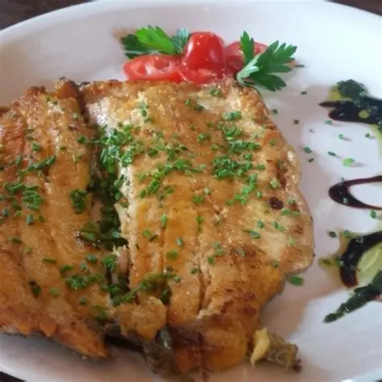
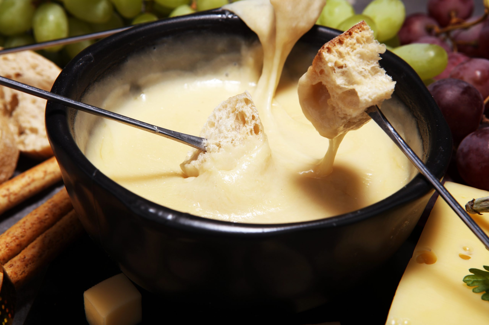
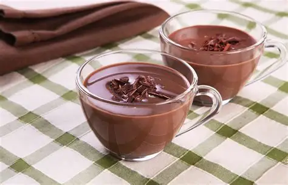
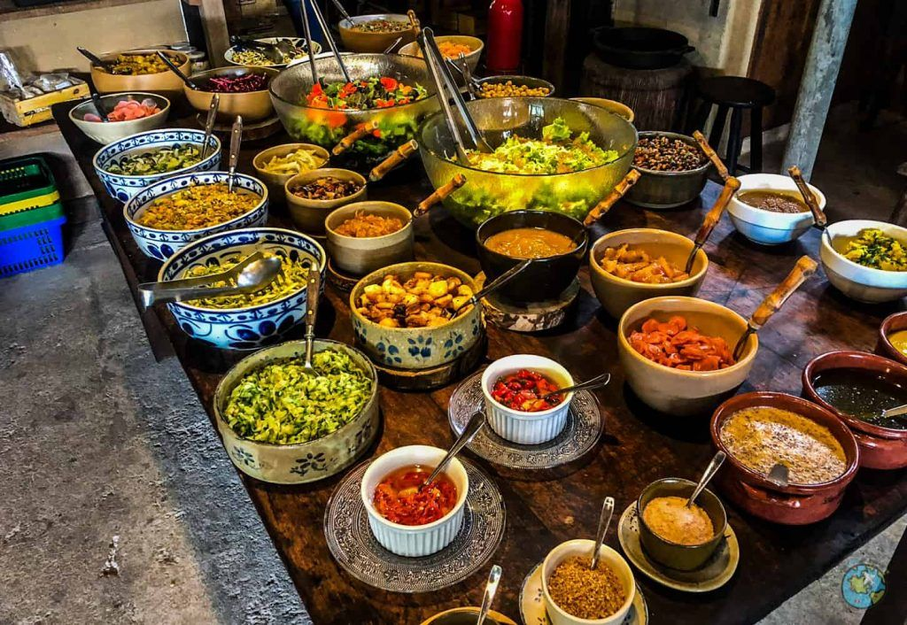

A gastronomia friburguense reúne pratos típicos da serra, receitas de origem europeia e produtos artesanais apreciados por moradores e turistas.
- Truta
- Fondue
- Comida alemã
- Queijos e embutidos artesanais
- Chocolate quente e cafés especiais
- Comida de fazenda
Peixe muito consumido na região serrana, servido grelhado, com amêndoas, ervas ou molhos especiais.

Bastante procurado no inverno devido ao clima frio da cidade.

Pratos como eisbein (joelho de porco), salsichas artesanais e chucrute refletem a influência dos imigrantes europeus.

Produzidos em fazendas da região serrana.

Muito apreciados por moradores e turistas durante o frio.

Feijão tropeiro, costela, frango com quiabo e outras receitas tradicionais do interior.
